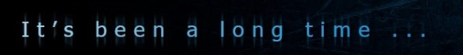

web sayfalarındaki resimer adına piksel denilen kareciklerden /noktalardan oluşur.bir görüntünün kalitesi yani çözünürlük,1 inch'teki piksel sayısı ile ölçülür.Çözünürlük DPI(DOT PER INCH ) birimi ile ifade edilir.eğer bir görüntü 300 piksel çözünürlüpe sahipse o görüntüde inch başına 300 piksel düşüyor demektir.600 dpi olan bir görüntü daha kalitelidir .inch başına 600 piksel düşer
çözünürlük: 1 inch başına düşen piksel/nokta sayısıdır.ne kadar fazla olursa okadar kaliteli görüntü elde edilir.doğal olarak ne kadar kaliteli olursa bellekte o kadar çok yer kaplar.günümüz monitörler (2018) 72 veya 96 dpi özelliklere sahiptir.bu nedenle web sayfalarındaki resimlerin çözünürlüğü genelde 72 dpi yapılır ve bellekte gereksiz yere meşgul edilmemiş olur.
nokto:aralığı monitördeki görüntüler piksellerden noktalardan oluşur.bu noktalar arasındaki mesafe ne kadar az olursa görüntü o kadar kaliteli olur.iki nokta arası mesafe (dot pitch ) ile ifade edilir.
renk derinliği:bir pikselin alabileceği renk sayısını ifade eder.ne kadar çok olursa o kadar iyidir ve o kadar da gerçekçi görünür.16bit/65000 farklı renk alabilir.
kontrast:renkler arası keskinliği ve farklılığı belli eder
tazeleme frekansı :ekrandaki görüntünün 1 saniyedeki kaç defa tazelendiğini belirtir.Ne kadar yüksek olursa o kadar iyi.Eğer tazeleme frekansı düşük olursa görüntü titreyebilir.grafik uygulamlarında frekansı yüksek monitörler kullanılmalıdır.
alt özelliği(alternate text):resim görüntülenmesse resmin bulunacağı konumda bir yazı görüntülenmesini sağlar.eğer alt metni resmin genişliğinden daha uzun olursa görüntülenmez.alt metni arama motorları için önemlidir ve alt metninin içeriği ve anahtar kelimeleri resmi yansıtmalıdır resim ile ilgili olmalıdır.
title:eğer resmin üzerine gelindiğinde açıklama görünmesinin istiyorsak title özelleiğini kullanabiliriz.title özelleği arama motorları içinde önemlidir ve title içerisine girilen metinlerin ve anahtar kelimelerin resmi yansıtması ve içerikle ilgili olması gerekmektedir.
resim 1
resimlere alt yazı veya üst yazı eklemek için figure ve figcaption tagları kullanılır ve bu taglar semantik taglerdir arama motorları tarafından resimlerin indekslenmesi için dikkate alınır.
faviconlar sayfanın head kısmına tanımlanır ve 16x16 ölçülerde olmalıdır.
< link rel="shortcut icon" href="favicon.ico" > rel ile link edilen nesnenin ne olacağı belirlenir. ico standart ve 16x16 lık bir favicon olduğu için type tanımlaması gereksizdir.
< link rel="icon" type="image/png" href="favicon.png" > yine farklı bir rel tanımlaması ile favicon link edildi.
< link rel="icon" type="image/png" href="favicon.jpg" >
css kodları ile resimlere saydamlık verebiliriz.opacity komutu ile 0 ile 1 arasında ondalık değerler vererek saydamlık derecesini ayarlayabiliriz.
çapa kullanımı başka sayfalara,web sitelerine mp3 ,mp4 rar , pdf gibi dosyalara link verilebilir target özelliği ile _blank v _self değerleri verilerek gidilecek olan sayfanın yeni sekmedemi yoksa aynı sekme içerisinde mi açılacağı belirlenebilir.self aynı sekmede açar blank yeni bir sekmede açar.
google| ÜLKELER | NÜFUSLAR |
|---|---|
| FRANSA | 10 |
| AMERİKA | 15 |
| ALMANYA | 20 |
| İTALYA | 30 |
| TOPLAM | 0 |